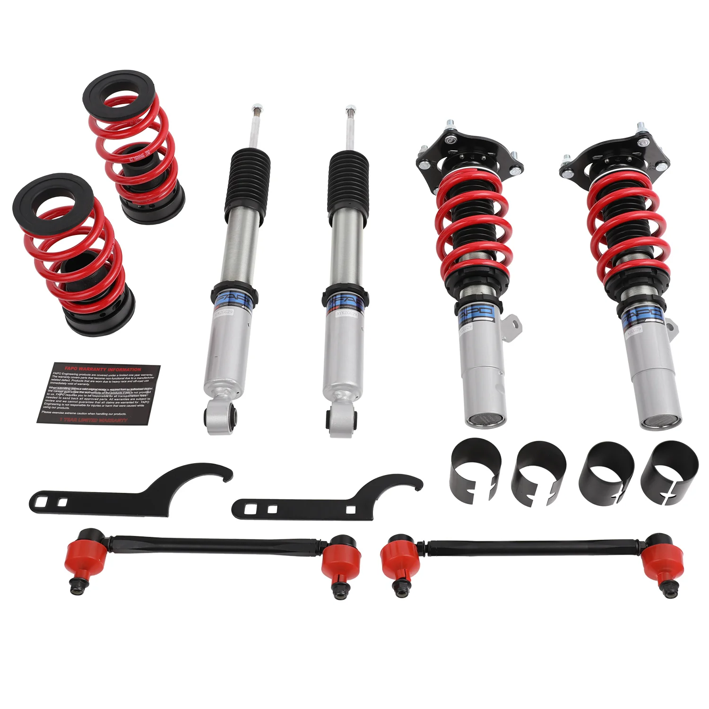

1 / 19Zawieszenie gwintowane do Honda Civic 10th/11th Gen 2016-2025 Insight 2019-2022 PS022740
Aplikacja Honda Civic Coupe/Sedan non-SI 10. generacji (USA) 50mm FC 2016-2021 Honda Civic 11. generacji Sedan bez SI FE 2022–2025 Honda Insight 3. generacji ZE4 2019-2022 Honda Civic 10. generacji (Chiny) 52 mm FC 2016–2021 Honda Civic Hatchback non-SI 10. generacji (USA) 52mm FK 2017-2020 Honda Civic 1.5L TURBO SPORT/TOURING (USA) 52mm (bez SI) FC1/FC2 2016-2020 Honda Civic 11. generacji FE/FL 2021+ Honda Integra…
Application Honda Civic Coupe/Sedan non-SI 10th Gen (USA) 50mm FC 2016-2021 Honda Civic 11th Gen Sedan non-SI FE 2022-2025 Honda Insight 3rd Gen ZE4 2019-2022 Honda Civic 10th Gen (China) 52mm FC 2016-2021 Honda Civic Hatchback non-SI 10th Gen (USA) 52mm FK 2017-2020 Honda Civic 1.5L TURBO SPORT/TOURING (USA) 52mm (exc SI) FC1/FC2 2016-2020 Honda Civic 11th Gen FE/FL 2021+ Honda Integra 5th Gen 2022+ Honda Civic 10th Gen SI (USA) 54mm FC/FK 2016-2020 Package Includes Front coilovers × 2 pcs Rear coilovers × 2 pcs Wrench × 2 pcs Sway bar link × 2 pcs Features Mono-tube shock design, provides larger capacity of oil and gas. Adjustable ride height. Adjustable pre-load spring tension. Hi Tensile performance spring - tested over 600,000 cycles with less than 0.04% distortion. Special surface treatment enhances durability and performance. All inserts come with fitted rubber boots to protect the damper and keep clean. Improve handling performance without sacrificing comfortable ride. Fast and affordable way to easily upgrade your car's appearance. Easy installation with the right tools. Ideal for track, drift, fast road, and daily driving. Accessories shown in photos are included. Default 1-year warranty for any manufacturing defect, upgrade to 2 years with our Extended Warranty Program. Technical Specifications Spring rate Front: 10 kg/mm Spring rate Rear: 12 kg/mm Adjustable height: Yes Adjustable camber plate: Only Front coilovers Adjustable damper: Non Adjustable Damper Force Warranty All items carry a standard 1-year warranty from the date of purchase. Proof of purchase is required; please provide your order number. To speed up warranty claims, please provide images and detailed documentation. Pictures and videos are usually sufficient, and we do not typically require the defective items to be returned. Additional information may be requested to diagnose and resolve the issue more effectively.
1999,99 PLN
Opis produktu
Aplikacja
- Honda Civic Coupe/Sedan non-SI 10. generacji (USA) 50mm FC 2016-2021
- Honda Civic 11. generacji Sedan bez SI FE 2022–2025
- Honda Insight 3. generacji ZE4 2019-2022
- Honda Civic 10. generacji (Chiny) 52 mm FC 2016–2021
- Honda Civic Hatchback non-SI 10. generacji (USA) 52mm FK 2017-2020
- Honda Civic 1.5L TURBO SPORT/TOURING (USA) 52mm (bez SI) FC1/FC2 2016-2020
- Honda Civic 11. generacji FE/FL 2021+
- Honda Integra 5. generacji 2022+
- Honda Civic 10. generacji SI (USA) 54mm FC/FK 2016-2020
Pakiet zawiera
- Gwinty przednie × 2 szt
- Gwinty tylne × 2 szt
- Klucz × 2 szt
- Łącznik stabilizatora × 2 szt
Cechy
- Konstrukcja amortyzatora jednorurowego zapewnia większą pojemność oleju i gazu.
- Regulowana wysokość jazdy.
- Regulowane napięcie sprężyny wstępnej.
- Sprężyna o dużej wytrzymałości na rozciąganie — przetestowana w ponad 600 000 cyklach przy zniekształceniu mniejszym niż 0,04%. Specjalna obróbka powierzchni zwiększa trwałość i wydajność.
- Do wszystkich wkładek dołączone są gumowe buty chroniące amortyzator i utrzymujące je w czystości.
- Popraw właściwości jezdne bez poświęcania komfortu jazdy.
- Szybki i niedrogi sposób na łatwą poprawę wyglądu Twojego samochodu.
- Łatwa instalacja przy użyciu odpowiednich narzędzi.
- Odpowiedni na tor, do driftu, szybkiej jazdy drogowej i codziennego użytkowania.
- W zestawie akcesoria widoczne na zdjęciach.
- Standardowa roczna gwarancja na każdą wadę produkcyjną, możliwość rozszerzenia do 2 lat w ramach naszego programu rozszerzonej gwarancji.
Dane techniczne
- Tempo sprężyny Przód:10 kg/mm
- Tempo sprężyny Tył:12 kg/mm
- Regulowana wysokość:Tak
- Regulowana płyta camber:Tylko przednie kolumny gwintowane
- Regulowany amortyzator:Nieregulowana siła amortyzatora
Gwarancja
Wszystkie produkty objęte są standardową roczną gwarancją liczoną od daty zakupu. Wymagany jest dowód zakupu; proszę podać numer zamówienia. Aby przyspieszyć roszczenia gwarancyjne, prosimy o przesłanie zdjęć i szczegółowej dokumentacji. Zdjęcia i filmy są zazwyczaj wystarczające i zazwyczaj nie wymagamy zwrotu wadliwych produktów. W celu skuteczniejszego zdiagnozowania i rozwiązania problemu możemy poprosić o dodatkowe informacje.
Application
- Honda Civic Coupe/Sedan non-SI 10th Gen (USA) 50mm FC 2016-2021
- Honda Civic 11th Gen Sedan non-SI FE 2022-2025
- Honda Insight 3rd Gen ZE4 2019-2022
- Honda Civic 10th Gen (China) 52mm FC 2016-2021
- Honda Civic Hatchback non-SI 10th Gen (USA) 52mm FK 2017-2020
- Honda Civic 1.5L TURBO SPORT/TOURING (USA) 52mm (exc SI) FC1/FC2 2016-2020
- Honda Civic 11th Gen FE/FL 2021+
- Honda Integra 5th Gen 2022+
- Honda Civic 10th Gen SI (USA) 54mm FC/FK 2016-2020
Package Includes
- Front coilovers × 2 pcs
- Rear coilovers × 2 pcs
- Wrench × 2 pcs
- Sway bar link × 2 pcs
Features
- Mono-tube shock design, provides larger capacity of oil and gas.
- Adjustable ride height.
- Adjustable pre-load spring tension.
- Hi Tensile performance spring - tested over 600,000 cycles with less than 0.04% distortion. Special surface treatment enhances durability and performance.
- All inserts come with fitted rubber boots to protect the damper and keep clean.
- Improve handling performance without sacrificing comfortable ride.
- Fast and affordable way to easily upgrade your car's appearance.
- Easy installation with the right tools.
- Ideal for track, drift, fast road, and daily driving.
- Accessories shown in photos are included.
- Default 1-year warranty for any manufacturing defect, upgrade to 2 years with our Extended Warranty Program.
Technical Specifications
- Spring rate Front: 10 kg/mm
- Spring rate Rear: 12 kg/mm
- Adjustable height: Yes
- Adjustable camber plate: Only Front coilovers
- Adjustable damper: Non Adjustable Damper Force
Warranty
All items carry a standard 1-year warranty from the date of purchase. Proof of purchase is required; please provide your order number. To speed up warranty claims, please provide images and detailed documentation. Pictures and videos are usually sufficient, and we do not typically require the defective items to be returned. Additional information may be requested to diagnose and resolve the issue more effectively.
FAPO Polska
Ten produkt obsługujemy lokalnie
Autoryzowana obsługa
FAPO Polska prowadzi katalog, kontakt i zamówienia bez odsyłania klienta do zewnętrznych sklepów.
Dobór po aucie
Sprawdzamy dopasowanie produktu do pojazdu, rocznika i wersji przed finalizacją zamówienia.
Wsparcie po zakupie
Masz kontakt w Polsce w sprawach zamówień, wysyłki, gwarancji i zwrotów.